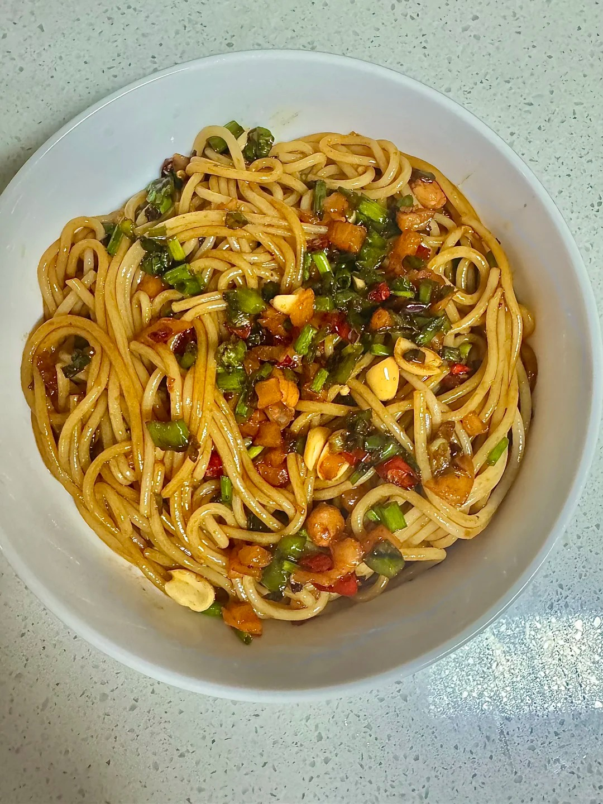
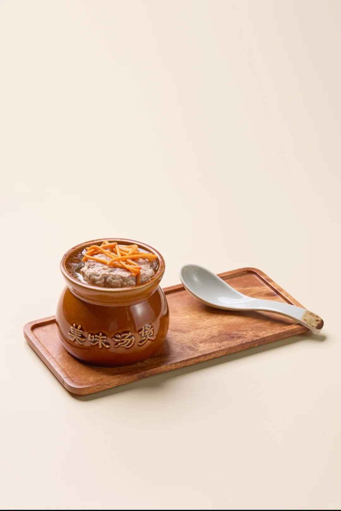
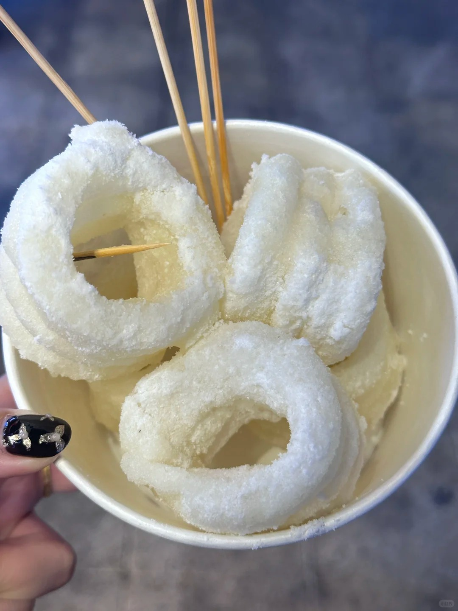
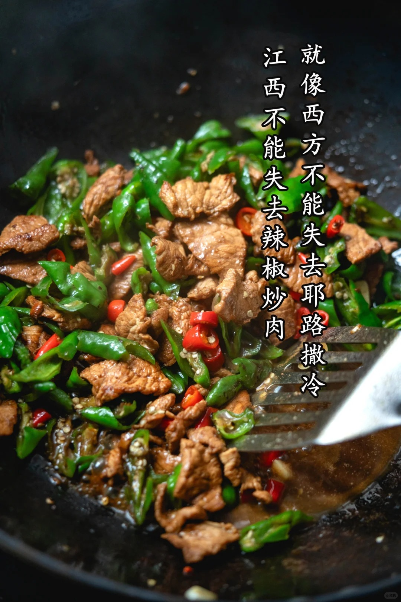
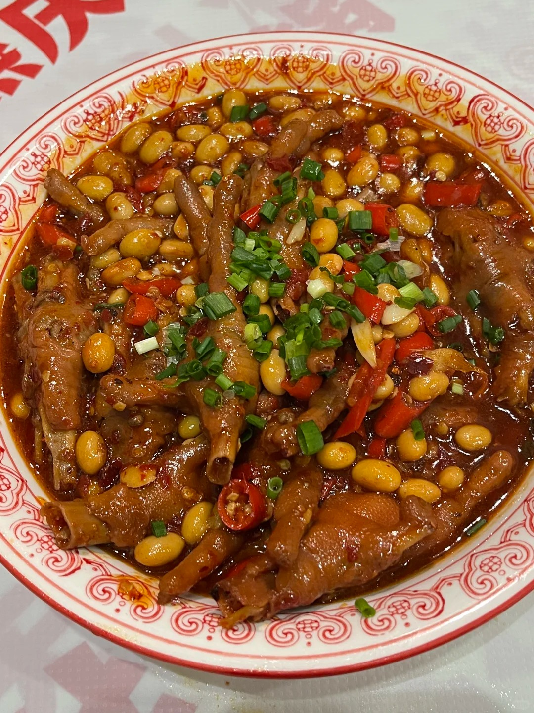

Nanchang's cuisine is unapologetically spicy, deeply comforting, and rooted in centuries of Gan culinary tradition.

SIGNATUREThe quintessential Nanchang breakfast. Silky-smooth rice noodles tossed in a savory, chili-oil-laced sauce with pickled radish, crunchy peanuts, and scallions — simple, addictive, and unforgettable.
Slow-cooked for hours inside small earthenware pots, these deeply nutritious broths — featuring pork ribs, mushrooms, or quail eggs — are a Nanchang ritual. Rich, aromatic, and soul-warming.

CLASSIC
SWEETA Ming Dynasty sweet treat that endures. Golden-fried glutinous rice cakes, crispy on the outside, soft and chewy within, dusted with sugar and crushed peanuts — pure nostalgia in every bite.
The heart and soul of Jiangxi home cooking. Thinly sliced pork stir-fried with heaps of fresh green chilies, delivering an intense, smoky, and fiery flavor that pairs perfectly with steamed rice.

SPICY
STREET FOODDuck necks, duck wings, and lotus root slices marinated in a proprietary blend of spices and fiery red chili oil. Nanchang's "Luwei" is legendary for packing the famous Jiangxi heat.
Walk off your meal and discover the breathtaking landmarks that make Nanchang unforgettable.
View Attractions →